第1章 系统介绍
1.1 系统登录
访问地址：http://ip:端口/项目名称，如http://127.0.0.1/ap
默认管理员账号：admin
初始密码：Admin201#
1.2 页面布局
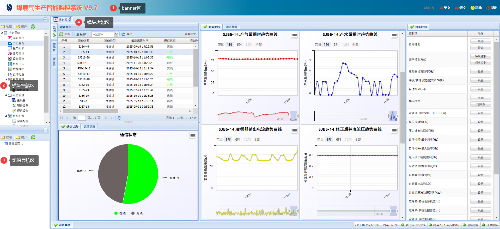
1.3 页面操作
1、拖拽窗口或者点击界面中缝位置的图标 或
或 可实现界面伸缩；
可实现界面伸缩；
2、点击饼图相应部分可对设备进行筛选；
3、历史曲线和报表曲线，每条曲线的纵坐标最大、最小值可配置。
第2章 应用示例
2.1 驱动配置
包括协议配置、单元组态、实例组态。

2.1.1 协议配置
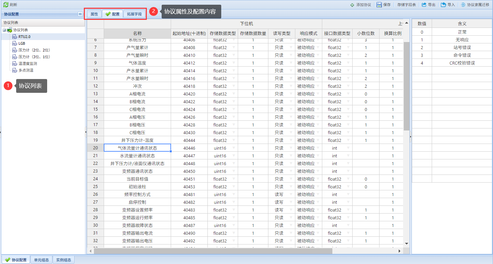
2.1.1.1 属性配置
在属性标签页配置协议的名称和排序序号
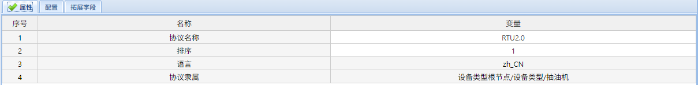
2.1.1.2 内容配置
名称：字段名称；
起始地址：字段起始地址，数组地址、modbus协议寄存器地址；
存储数据类型：设备中存储该字段的数据类型，包括：bit、byte、int16（有符号16位整型）、uint16（无符号16位整型）、float32（32位浮点）、bcd（bcd码，时间一般配置为该类型）；
存储数据数量：存储数据类型的数量，如1个uint16，1个float32，24个bcd码；
读写类型：只读、只写或者读写；
响应模式：主动上传（设备主动上传）、被动响应（设备被动等待上位机读写）。
接口数据类型：上位机要解析成的数据类型(界面显示的数据)，包括bool（布尔型）、int（整型）、float32（32位浮点）、float64（64位浮点）、string（字符串），位数组和开关量接口数据类型固定选择bool型；
小数位数：保存数据小数位数；
换算比例：存储数据*换算比例=接口数据（解析数据时，存储数据解析后乘以换算比例，得到界面显示的接口数据；控制设备时，界面输入的控制值为接口数据，除以换算比例，为最终写入到设备中的存储数据）；
单位：上位机解析后的单位（和界面显示一致）；
解析模式：数据量、枚举量、开关量；
2.1.1.3 拓展字段配置
可自定义拓展字段，由两项采集数据，进行四则运算计算得到。
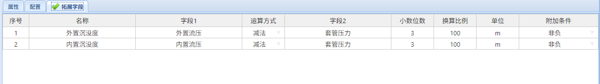
名称：拓展字段名称；
字段1：双击单元格进行选择；
运算方式：支持加减乘除运算；
字段2：双击单元格进行选择；
小数位数：保存数据小数位数；
换算比例：字段1和字段2通过加减乘除运算后，乘以换算比例，即得到最终值；
单位：拓展字段单位
附加条件：进一步添加限制条件，如非负；
2.1.1.4 字段含义配置
枚举量：如气体流量计通信状态值对应的含义配置
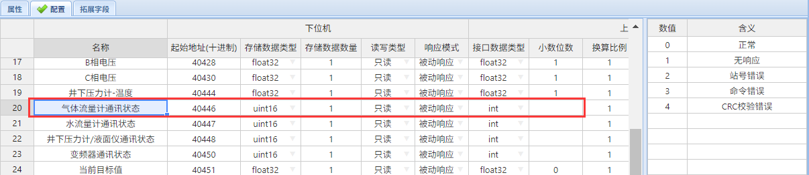
开关量：如变频器状态字位数组，位所对应的含义以及每一位的值对应的状态

数据量：如井口温度，将值-50设置为无效数据N/A
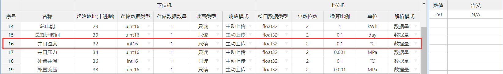
2.1.1.5 关联计算字段及运行状态配置
点击“计算字段关联表”按钮，查看根据协议自动生成的映射表。
关联计算字段配置：特殊含义的字段，需要设置关联计算字段供系统识别。
运行状态配置：关联计算字段为运行状态的项，可以设定特定值（枚举量）、特定状态（开关量）或者范围（数据量）。

2.1.1.6 协议隶属迁移
点击“协议隶属迁移”按钮，修改协议所属设备类型
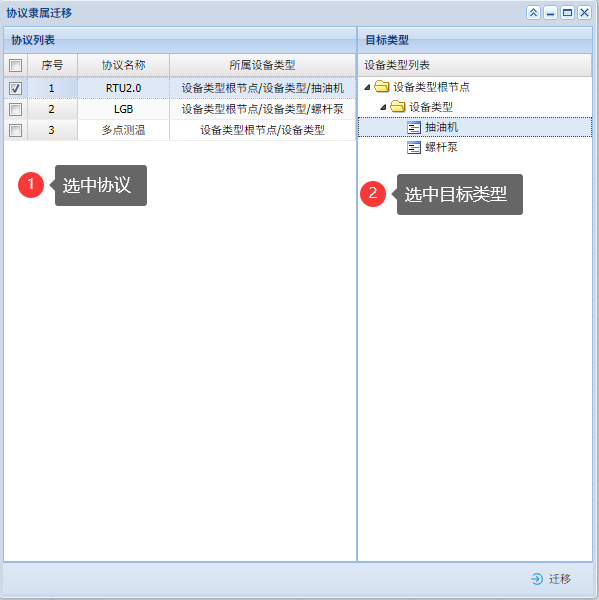
2.1.2 采控单元
在协议下面创建采控单元，每个采控单元下面可以创建一个采集组和一个控制组，并勾选采集组和控制组包含的项，以及配置哪些项需要进行日累计计算（如由有功功耗计算日用电量）。
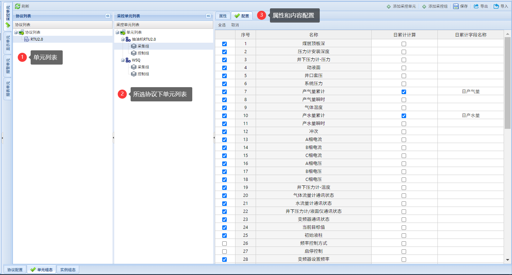
2.1.3 显示单元
在协议下面创建显示单元，并设置单元下包含的内容及曲线。
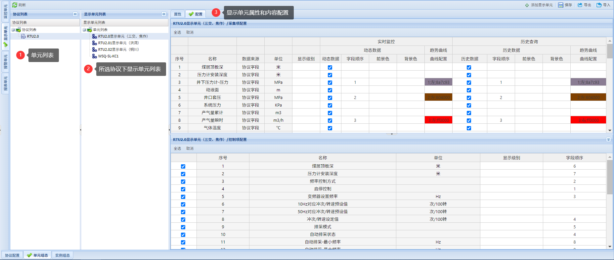
1、采集项、计算项和录入项
显示级别：采集项显示级别，用户只能查看显示级别小于自身数据显示级别的数据（见角色管理模块和用户管理模块，数字越小代表等级越大）；
实时监控/动态数据/动态数据、字段顺序：对应实时监控模块中实时数据表和历史查询模块中详细数据表中字段的显示内容和顺序（左到右、上到下顺序），未设置顺序将放在最后面显示；
实时监控/动态数据/前景色：对应实时监控模块中动态数据表相应显示项的字体颜色，与背景色一起，可重点显示某些内容, 双击单元格进行配置；
实时监控/动态数据/背景色：对应实时监控模块中动态数据表相应显示项的背景色，与前景色一起，可重点显示某些内容, 双击单元格进行配置；
实时监控动态数据显示效果如下：
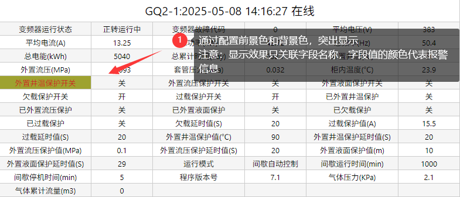
实时监控/动态数据/趋势曲线：实时曲线显示顺序、颜色、样式等，未设置则不显示曲线，双击单元格进行配置，对应实时监控模块中趋势曲线
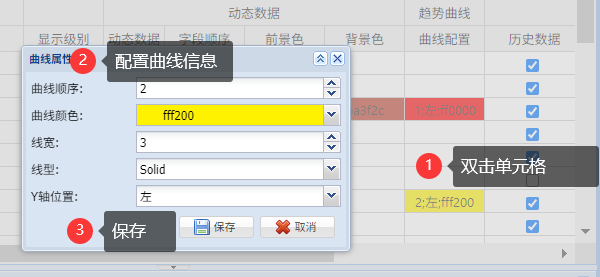
实时监控趋势曲线显示效果如下：
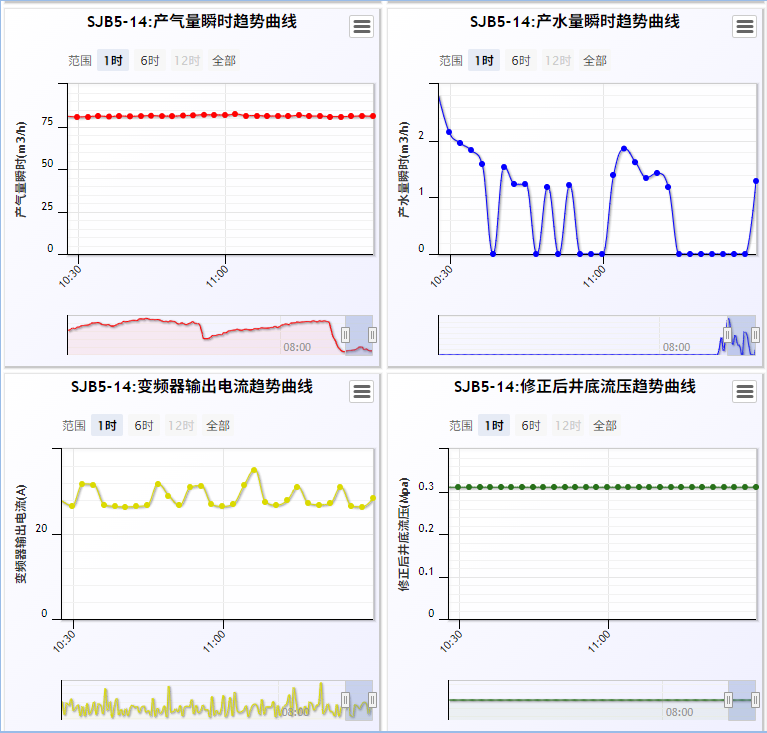
历史查询/历史数据/历史数据、字段顺序：对应历史查询模块中历史数据表显示内容和顺序，未设置顺序将放在最后面显示；
历史查询/历史数据/前景色：对应历史查询模块中详细数据表相应单元格的字体颜色, 双击单元格进行配置；
历史查询/历史数据/背景色：对应历史查询模块中详细数据表相应单元格的背景色, 双击单元格进行配置；
历史数据显示效果如下：
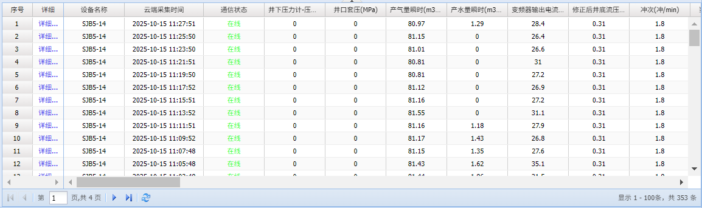
历史查询/历史数据/趋势曲线：历史曲线显示顺序、颜色、样式等，未设置则不显示曲线，双击单元格进行配置，显示效果如下：
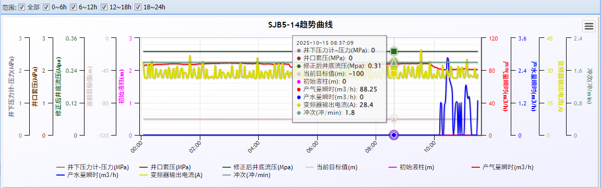
开关量数据显示格式：针对开关量数据生效，可配置：含义（只显示位含义）以及字段/含义（协议字段/位含义）。
2、控制项
显示级别：采集项显示级别，用户只能查看显示级别小于自身数据显示级别的数据（见角色管理模块和用户管理模块，数字越小代表等级越大）；
字段顺序：对应实时监控模块中设备控制中的控制项显示顺序。
控制项显示效果如下：
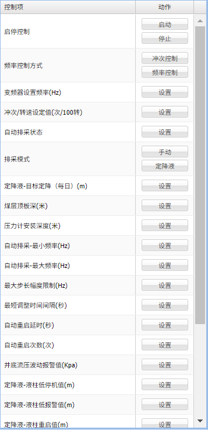
2.1.4 报警单元
在协议下面创建报警单元，并设置单元下包含的报警项及报警配置。
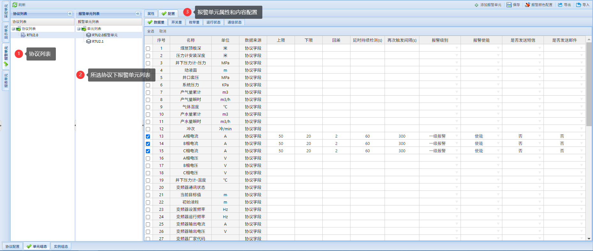
分别配置数据量、开关量、枚举量、运行状态、通信状态报警项，配置项如下：
上限：报警上限；
下限：报警下限；
回差：回差值即报警后返回到非报警状态时需要的一个差值，例如报警上限设置为60，回差值为5，当数据达到60时产生报警，如果要消除报警，则需要等待数据达到55以下；
延时持续检测：达到报警条件后，持续所设时间后，判断为报警，中间如果恢复正常，则取消报警；
再次触发间隔：间隔时间内不重复报警和推送；
报警级别：正常、一级报警、二级报警、三级报警（一级为最紧急严重）；
报警使能：使能或者失效（失效则一律不报警）；
是否发送短信：报警发生时是否向用户发送短信（建议一级报警项设为是，其他为否，避免频繁发送）；
是否发送邮件：报警发生时是否向用户发送邮件（建议一级报警项设为是，其他为否，避免频繁发送）；
触发状态：开关量数据生效，开或者关触发报警；
报警颜色配置：
点击“报警颜色配置”按钮，对通信状态、运行状态以及各级别报警的颜色进行配置。

通信状态颜色：在线状态和离线状态报警颜色配置，生效范围：
1）实时监控模块：设备概览表中通信状态列；
2）实时监控模块：通信状态统计饼图颜色(在线、离线所设前景色)；
3）历史查询模块：设备列表和历史数据表中通信状态列；
4）历史查询模块：通信状态统计饼图颜色(在线、离线所设前景色)。
运行状态颜色：运行状态和停抽状态报警颜色配置，生效范围：
1）实时监控模块：设备概览表中运行状态列；
2）实时监控模块：运行状态统计饼图颜色(在线、离线所设前景色)；
3）历史查询模块：设备列表和历史数据表中运行状态列；
4）历史查询模块：运行状态统计饼图颜色(在线、离线所设前景色)。
报警等级颜色：数据报警等级颜色配置，生效范围：
1）实时监控模块：设备概览表和实时数据表中采集数据报警颜色；
2）历史查询模块：历史数据表和详细数据表中采集数据报警颜色。
2.1.5 报表单元
添加报表单元并分别配置单井报表中的班报表和日报表、区域报表中日报表的报表模板及报表内容、曲线。
2.1.5.1 属性配置
在属性标签页配置报表单元名称、计算类型和排序序号
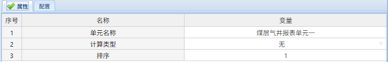
2.1.5.2 单井报表/班报表配置
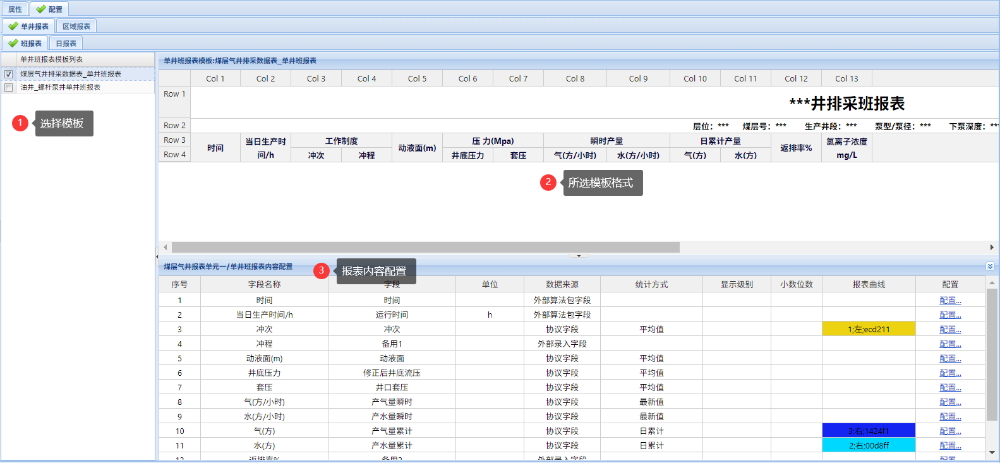
点击“配置”，弹出报表内容配置窗口
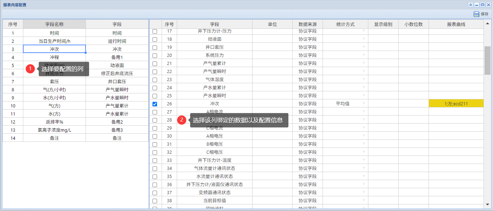
统计方式：可选择最大值、最小值、平均值、最新值、最旧值、日累计值作为报表中显示的内容，为空则显示原始值；
显示级别：用户只能查看显示级别小于自身数据显示级别的数据（见角色管理模块和用户管理模块，数字越大代表等级越小）；
小数位数：报表中显示数据的小数位数；
报表曲线：配置报表曲线内容，双击单元格进行配置，未设置则不显示曲线。
2.1.5.3 单井报表/日报表配置
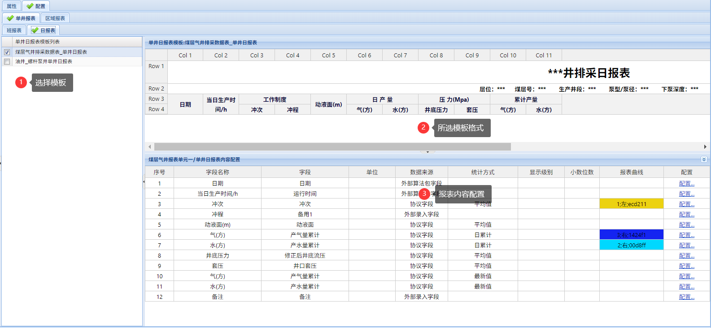
点击“配置”，弹出报表内容配置窗口
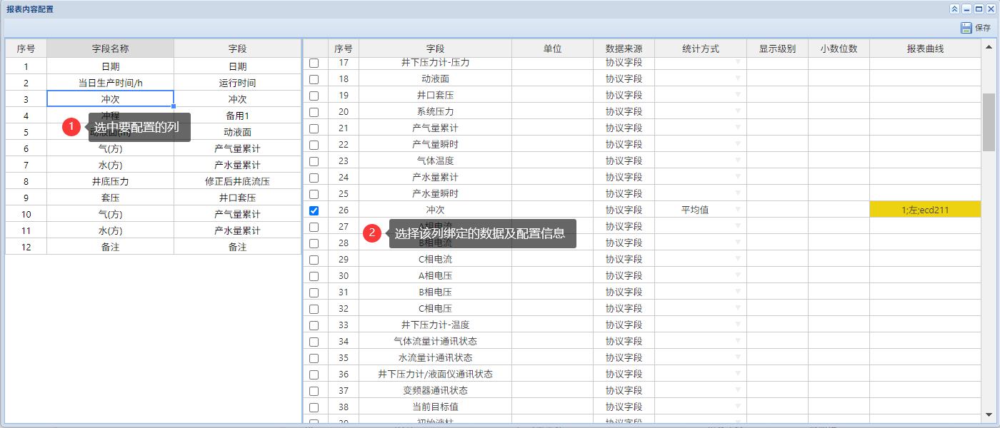
统计方式：可选择最大值、最小值、平均值、最新值、最旧值、日累计值作为报表中显示的内容，为空则显示原始值；
显示级别：用户只能查看显示级别小于自身数据显示级别的数据（见角色管理模块和用户管理模块，数字越大代表等级越小）；
小数位数：报表中显示数据的小数位数；
报表曲线：配置报表曲线内容，双击单元格进行配置，未设置则不显示曲线。
2.1.5.4 区域报表/日报表配置
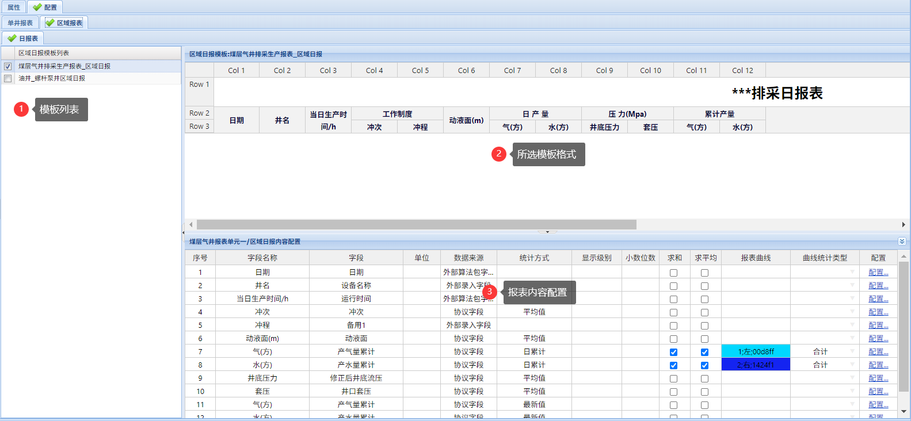
点击“配置”，弹出报表内容配置窗口
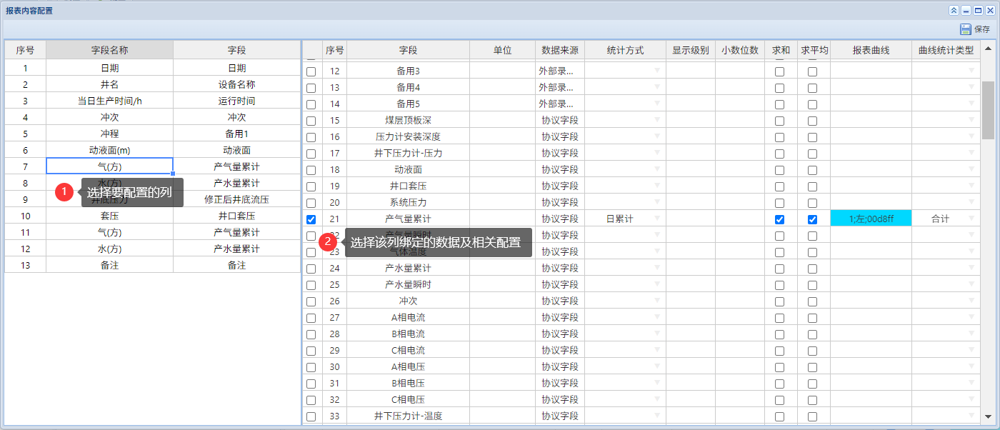
统计方式：可选择最大值、最小值、平均值、最新值、最旧值、日累计值作为报表中显示的内容，为空则显示原始值；
显示级别：用户只能查看显示级别小于自身数据显示级别的数据（见角色管理模块和用户管理模块，数字越大代表等级越小）；
小数位数：报表中显示数据的小数位数；
求和：是否在报表中显示该项的和；
求平均：是否在报表中显示该项的平均值；
报表曲线：配置报表曲线内容，双击单元格进行配置，未设置则不显示曲线；
曲线统计类型：曲线数据是各设备该项数据的和还是平均值。
2.1.6 采控实例
配置完采控单元后（确定采控项和地址配置），还需配置采控实例（读写以及解析时具体的协议），实例和设备直接关联（见2.2.1主设备）。
点击“添加实例”按钮，进行创建。
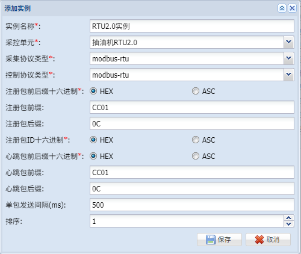
实例名称：实例名称；
采控单元：在下拉框中选择对应的采控单元；
采集协议类型：数据采集及解析具体协议，如modbus-rtu；
控制协议类型：设备控制具体协议，如modbus-rtu；
注册包前后缀16进制：注册包前后缀为十六进制还是ASC；
注册包前缀：注册包是设备上线时发送的信息，包含设备ID信息，如没有则不填写；
注册包后缀：如没有注册包则不填写；
注册包ID16进制：注册包内容为十六进制还是ASC；
心跳包前后缀16进制：心跳包前后缀为十六进制还是ASC；
心跳包前缀：心跳包用于判断设备连接状态，如没有则不填写；
心跳包后缀：如没有心跳包则不填写；
单包发送间隔(ms)：读取数据时，数据包发送间隔；
排序：实例排序序号，对应树形列表中实例显示顺序。
2.1.7 显示实例
置完显示单元后，还需配置显示实例，显示实例和设备直接关联（见2.2.1主设备）。
点击“添加实例”按钮，进行创建。
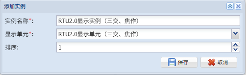
实例名称：实例名称；
显示单元：在下拉框中选择对应的显示单元；
排序：实例排序序号，对应树形列表中实例显示顺序。
2.1.8 报警实例
配置完报警单元后，还需配置报警实例，报警实例和设备直接关联（见2.2.1主设备）。
点击“添加实例”按钮，进行创建。
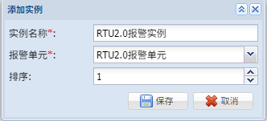
实例名称：实例名称；
报警单元：在下拉框中选择对应的报警单元；
排序：实例排序序号，对应树形列表中实例显示顺序。
2.1.9 报表实例
配置完报表单元后，还需配置报表实例，报表实例和设备直接关联（见2.2.1主设备）。
点击“添加实例”按钮，进行创建。
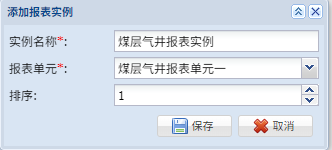
实例名称：实例名称；
报表单元：在下拉框中选择对应的报表单元；
排序：实例排序序号，对应树形列表中实例显示顺序。
2.1.10 删除操作
在相应的列表中选中要删除的项，右键→删除
2.2 设备管理
2.2.1 主设备
按照2.1节中添加好驱动相关的数据后，在该模块添加设备。
2.2.1.1 添加设备
点击“添加设备”按钮，将在选中的单位下添加设备，如没有选中单位，则在第一个单位下添加，同一单位下不能添加同名设备。
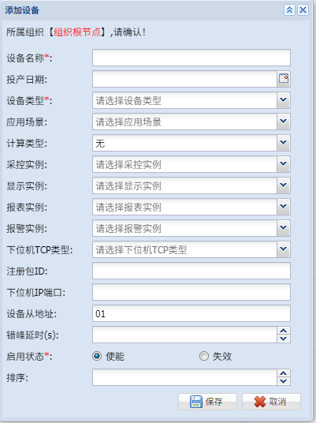
设备名称：同一单位下不能添加同名设备；
投产日期：设备投产日期
设备类型：选择设备类型
应用场景：油田或者煤层气田
计算类型：功图计算、转速计产以及无
采控实例：对应驱动配置/实例配置/采控实例中配置的实例；
显示实例：对应驱动配置/实例配置/显示实例中配置的实例；
报表实例：对应驱动配置/实例配置/报表实例中配置的实例；
报警实例：对应驱动配置/实例配置/报警实例中配置的实例；
下位机TCP类型：TCP Client或者TCP Server；
注册包ID：下位机TCP Client模式需配置；
下位机IP端口：下位机TCP Server模式需配置；
设备从地址：如01、02；
错峰延时：采集数据时延时采集时间，以免设备同时采集资源紧张；
状态：设为失效后，将不再采集该设备的数据；
排序编号：设备显示顺序；
2.2.1.2 设备查看及修改
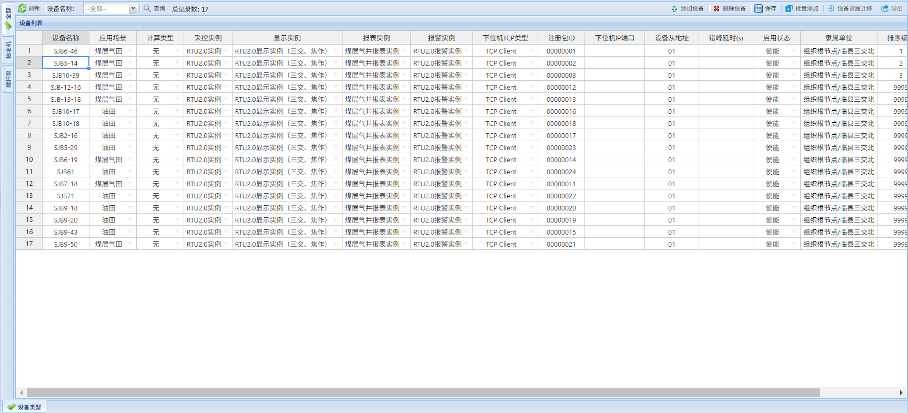
在设备列表处进行设备主要信息查看和修改。
2.2.1.3 删除设备
在设备列表中选中删除的设备，点击“删除设备”按钮，进行删除操作。
2.2.1.4 批量添加
点击“批量添加”按钮，在所选单位下进行设备批量添加。在弹出的窗口中编辑添加的设备信息（可在excel中编辑好，粘贴到表格中），点击“保存”按钮进行保存。校验无问题的数据直接保存，有问题的数据返回并显示异常数据处理窗口，在窗口中进行数据修改二次保存，或者放弃。无异常数据直接保存成功。
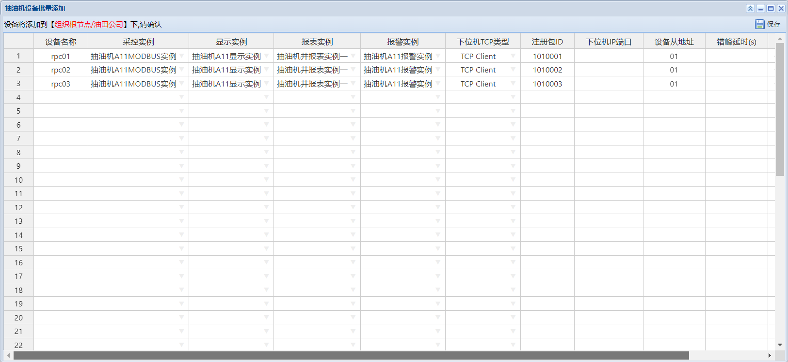
保存后，如果有校验不通过的数据，会显示异常数据处理窗口。异常数据分为冲突数据(注册包ID、设备从地址和已有设备冲突)和已有数据（同一单位下已存在同名设备）。
冲突数据修改注册包ID和设备从地址，直到无冲突时才可保存成功。
已有数据继续保存的话，覆盖同名设备的信息，不会添加设备。
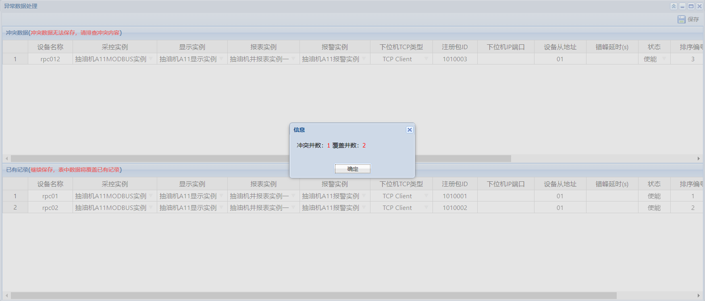
2.3 多语言配置
以创建英文环境为例
2.3.1 创建角色
在角色管理模块，创建角色并只赋予英文权限，如果赋予多个语言权限，则以分配该角色的用户登录系统后，可在多个语言之间切换。
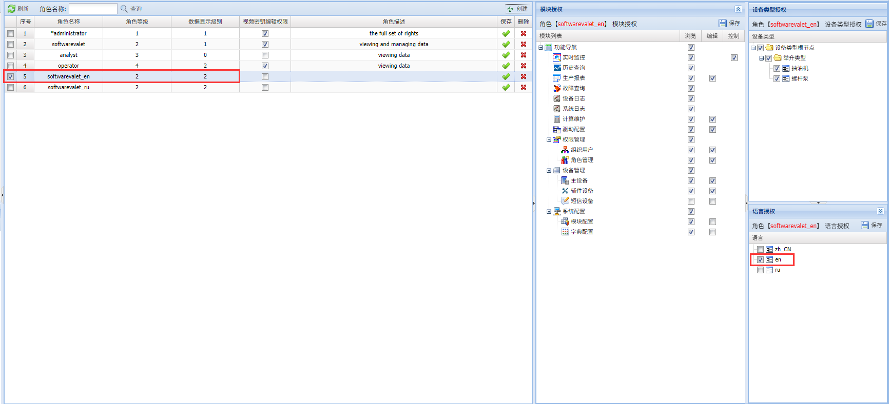
2.3.2 创建组织
在组织用户模块创建英文组织
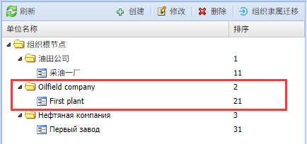
2.3.3 创建用户
在英文组织下创建用户，并分配相应英文角色
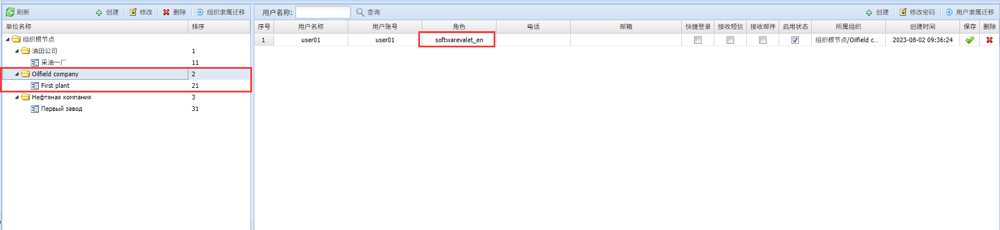
2.3.4 创建驱动
切换到英文环境创建英文协议，并配置相关单元和实例，创建步骤见2.1节
（1）切换英文环境（如已是则跳过）
（2）创建协议（当前浏览语言即为创建的协议的语言），并配置相关单元和实例。
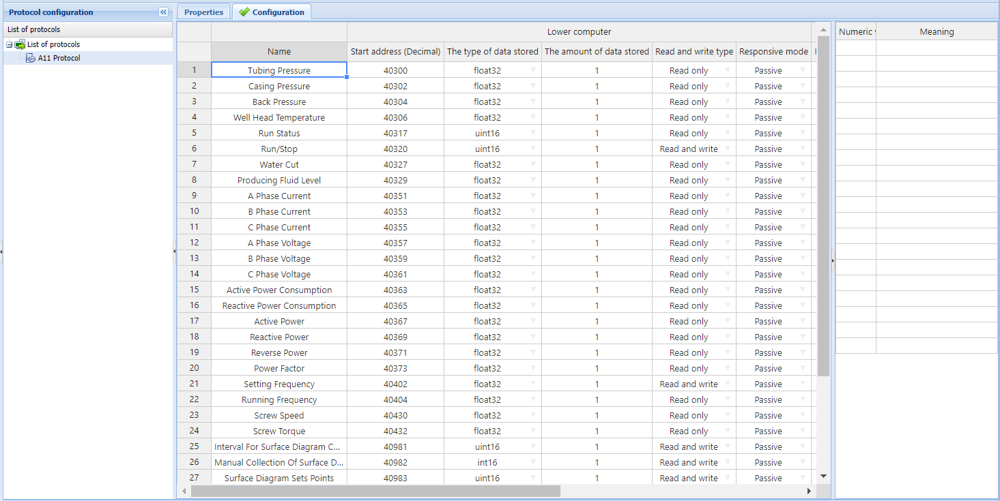
2.3.5 添加主设备
在创建的英文组织下，创建英文名称的主设备（创建步骤见2.2.1节），并配置上一小节中创建的相关英文实例。
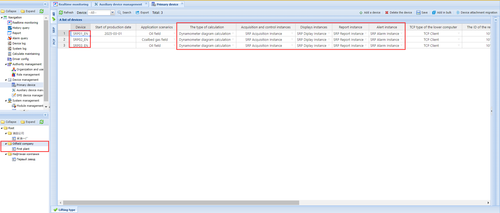
至此，以创建的英文用户登录系统，则系统显示内容的语言均为英文。
2.4 运维配置
在“系统配置/运维配置”模块可进行自动运维配置以及结构数据的备份与恢复。
1、自动运维
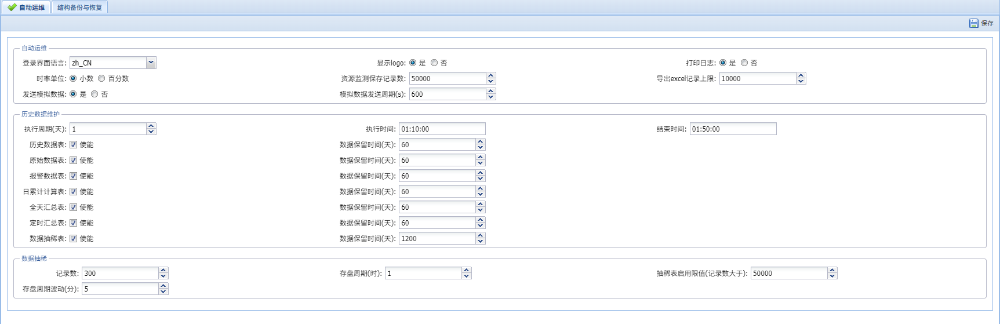
2、结构备份与恢复
数据备份：
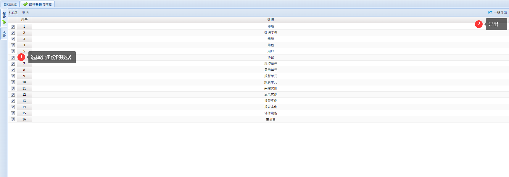
数据导入：
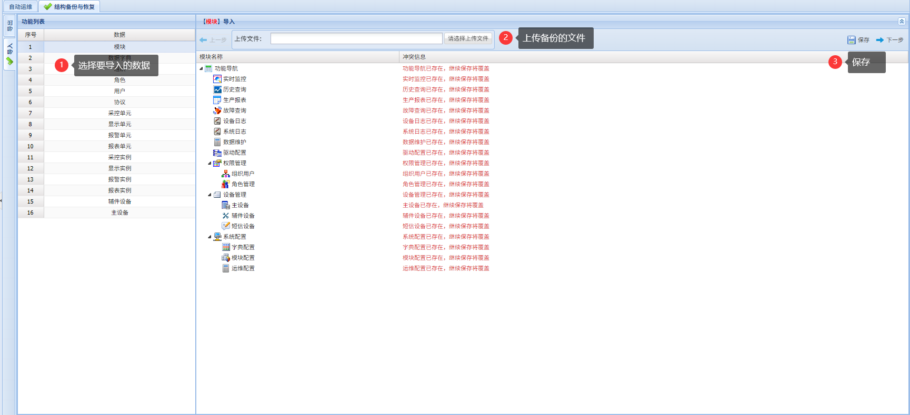